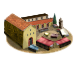

Imperium
Imperium Murex Snail Collectors (Industry) chain
4 levels, each replacing the one before it — you upgrade in place rather than building alongside.
Murex Snail Collectors (Industry) → Purple Dye Works (Industry) → Purple Dye Factory (Industry) → Purple Dye Exports (Industry)
Pictures are the game's own building art. Where a culture ships none of its own, the game falls back to another culture's, and that is what is shown here.
Levels at a glance
| Level | Cost | Build time | Minimum settlement | Upgrades to | Level | Cost | Build time | Minimum settlement | Upgrades to | ||
|---|---|---|---|---|---|---|---|---|---|---|---|
| Murex Snail Collectors (Industry) | 2,500 | 2 | large town | Purple Dye Works (Industry) | Purple Dye Works (Industry) | 5,000 | 4 | city | Purple Dye Factory (Industry) | ||
| Purple Dye Factory (Industry) | 7,500 | 6 | large city | Purple Dye Exports (Industry) |  | Purple Dye Exports (Industry) | 15,000 | 8 | huge city | — |
Costs in denarii, build time in turns.
Purple Dye Works (Industry)

The game ships no picture of its own for this level and shows the Local Market picture instead.
A large purple dye industry is flourishing, meeting the demands of the wealthy and influential, and the smell, well, it’s just part of the process.
The city wants purple? The city gets purple. Time to expand!
As the demand for Tyrian purple grows, so too does the scale of this peculiar industry, filling the air with the unmistakable odor of murex snail dye.
More snails, more dye, more purple cloth, just what every aristocrat dreams of.
Phoenician myth tells the tale of a beautiful sea nymph, Tyrus, and the god Melqart, who sought to win her heart, proving that even gods had to get creative to win over a lover. Melqart dispatched his faithful hound to scour the beaches of modern-day Lebanon in search of a gift for her. When the dog returned, his muzzle was stained violet. When Melqart looked closer, he found in the dog’s teeth a crushed sea snail, oozing and purple. The god’s dog had certainly stumbled on a treasure, and Melqart showed it to Tyrus. Immediately smitten with the color, Tyrus agreed to marry Melqart if he could fashion her a robe in the same vibrant hue. Determined and resourceful, Melqart collected enough sea snails to fulfill the wish of his beloved, and thus “Tyrian purple” was born.
Today, it's not love but wealth that drives the dye industry, so bring on the snails, the dye, and the riches. Just remember to not breathe too deeply.
| Cost | 5,000 denarii | Build time | 4 turns | Minimum settlement | city |
| Upgrades to | Purple Dye Factory (Industry) |
What it does
- +4 trade income
- +1 public order (law)
- -2 public order (happiness) (player only)
Show 1 effect that apply only in the circumstances shown
- -2 public order (happiness) — only when
not is_player and building_present_min_level purple_dye_production purple_dye_2
Purple Dye Exports (Industry)

The game ships no picture of its own for this level and shows the Large Forum picture instead.
Purple dye is being exported far and wide, making the region renowned for this rare and coveted color, bringing in a tidal wave of wealth, and a reputation as the source of aristocratic luxury.
Even emperors know where to get the finest purple!
With the dye business booming, your region is now the prime exporter of Tyrian purple, being sent across all the Mediterranean.
From kings to emperors, everyone who’s anyone is draping themselves in your luxury fabric.
This region’s coffers are filling with gold as fast as the snails are harvested, and your merchants are enjoying a high-status life themselves.
Their names are whispered in royal courts, not for politics or war, but for the finest purple robes that money can buy.
This region now supplies your empire with purple dye, owning the colour of royalty gives us not only riches, but also a law bonus in all our regions.
| Cost | 15,000 denarii | Build time | 8 turns | Minimum settlement | huge city |
What it does
- +7 trade income
- -4 public order (happiness) (player only)
Show 1 effect that apply only in the circumstances shown
- -4 public order (happiness) — only when
not is_player and building_present_min_level purple_dye_production purple_dye_3
Murex Snail Collectors (Industry)

The game ships no picture of its own for this level and shows the Local Barter picture instead.
A small workshop for extracting purple dye from sea snails has been established, keep your nose plugged!
No need to kill the poor creature, just prod it until it gives up the goods.
The production of purple dye is just getting started in this region, though the smell of snail extract is already enough to keep most people at a safe distance.
Tyrian Purple, prized since the Bronze Age, is a dye extracted from the murex shellfish which was first produced by the Phoenician city of Tyre. Its difficulty of manufacture, striking purple to red colour range, and resistance to fading made clothing dyed using Tyrian purple highly desirable and expensive, with an ounce of this dye more valuable than gold, at least to aristocrats.
For everyone else, it’s just a bad-smelling job. But a profitable one!
| Cost | 2,500 denarii | Build time | 2 turns | Minimum settlement | large town |
| Upgrades to | Purple Dye Works (Industry) |
What it does
- +2 trade income
- -1 public order (happiness) (player only)
Show 1 effect that apply only in the circumstances shown
- -1 public order (happiness) — only when
not is_player and building_present_min_level purple_dye_production purple_dye_1
Purple Dye Factory (Industry)

The game ships no picture of its own for this level and shows the Forum picture instead.
Massive-scale purple dye extraction has been established, turning this region into a centre of high-status fashion, despite the smell.
Nothing says ‘luxury’ quite like a warehouse full of dead snails.
Purple dye production has become a full-blown industry in this region, with a small city’s worth of snails sacrificed for the nobles desires.
The aristocrats cannot get enough of Tyrian purple, and this region is happy to oblige, if you can handle the smell.
While the dye fetches a fortune, the foul stench from the murex sea snail fills the air. From submerging traps to boiling snail glands for days, the process is as laborious as it is putrid.
But the payout is unmatched, as nobles, generals, and royalty pay a fortune for a robe in Tyrian purple, a dye often compared to the price of gold.
Sure, some may question your wisdom for entering this line of work, but the overflowing coffers will silence them all!
| Cost | 7,500 denarii | Build time | 6 turns | Minimum settlement | large city |
| Upgrades to | Purple Dye Exports (Industry) |
What it does
- +6 trade income
- +1 public order (law)
- -3 public order (happiness) (player only)
Show 1 effect that apply only in the circumstances shown
- -3 public order (happiness) — only when
not is_player and building_present_min_level purple_dye_production purple_dye_3